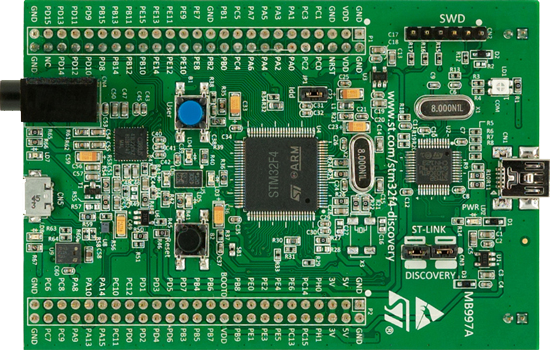

- SGM
- Microprocessor Mouse
This project was developed for my Micro Processors class at McGill University (ECSE 426).
The goal was to turn a 32-bit ARM cortex MCU board
( STM32F4 Discovery)
into a mouse which used the USB interface to communicate with the computer, and then to have it function wirelessly over bluetooth.
The report on mainly the bluetooth functionlity of the system can be seen here.
The board was programmed using embedded C.
MCU Board - STM32F4 Discovery:

This was acheieved by using the pitch and roll data from the accelerometer to move the mouse up and down and side to side.
The buttons were attached via GPIO and configured such that the mouse could support all standard presses (single, double, long).
Once the mouse functionality was tested, itegration of wireless operation over bluetooth begain.
This used one board as a sender and another as a receiver,
communicating with two of TI's' CC2500.
Sender Block Diagram:
Sender Board (wireless):

Receiver Board (connected to computer):